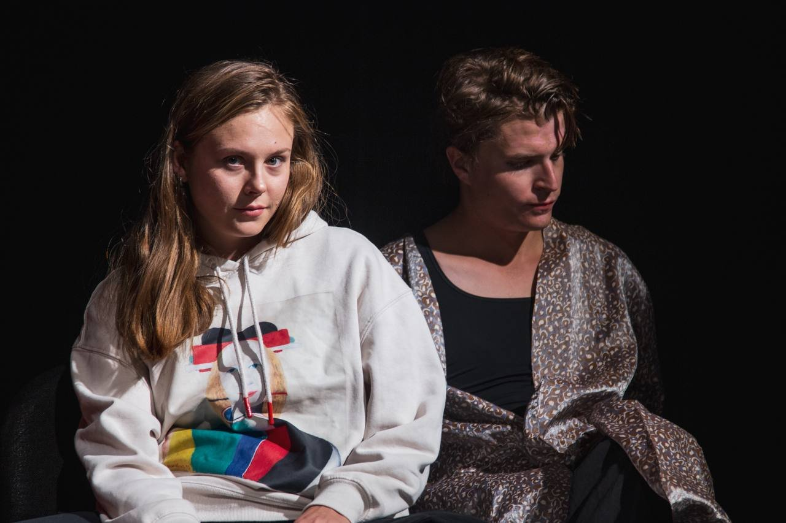
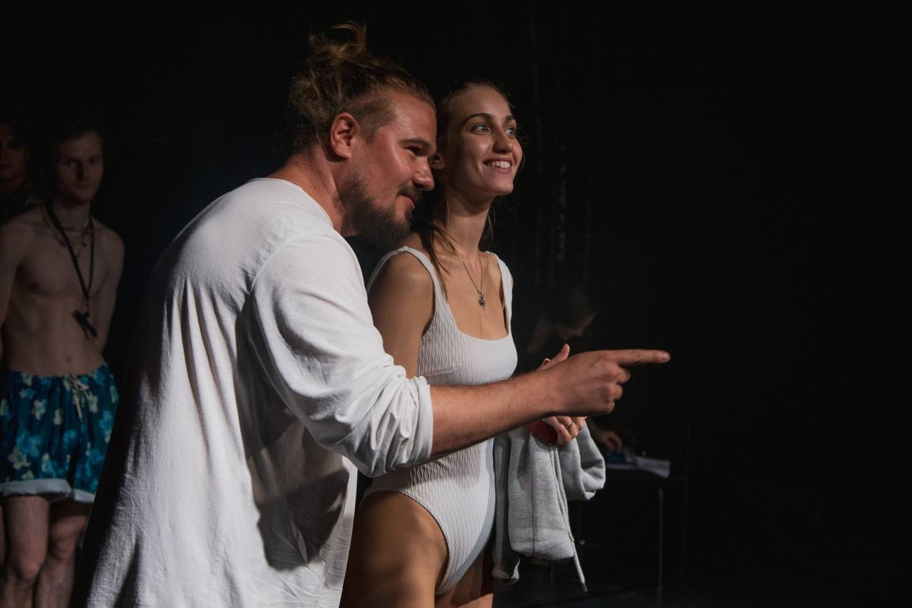
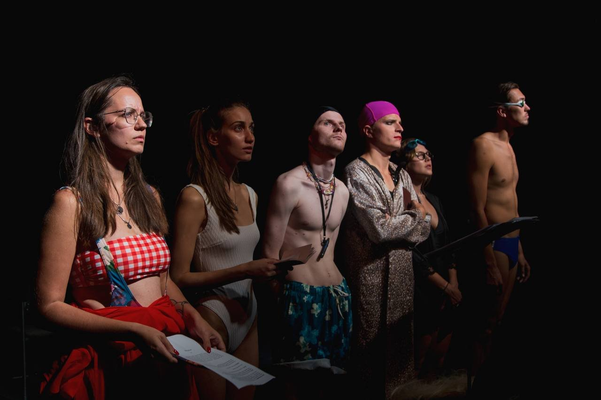
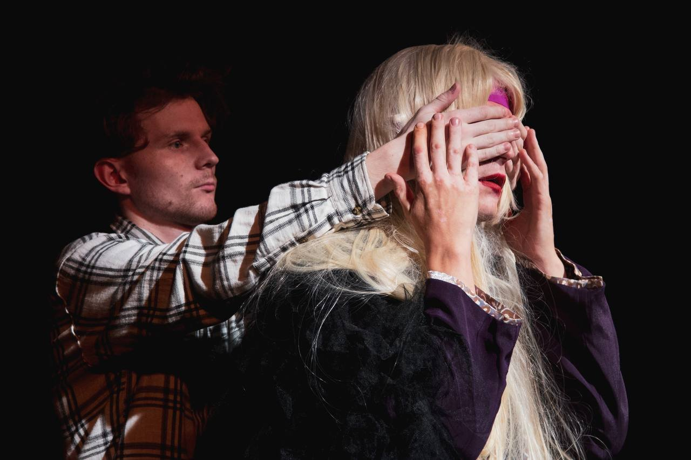

תקציר
טרגיקומדיה אבסורדית על פי מחזהו של רינת תשימוב: הגיבור, אדם עם מוגבלות, ממריא לפתע לחלל ומציל את העולם. מה שנפתח כדרמה משפחתית גולש לסאטירה מדע־בדיונית על משפחה, אומץ וזהות — עד כמה רחוק יגיע אדם בחיפוש אחר משמעות, ולו עד הכוכבים.
צוות
- בימוי: ניק דריידן
- מחזה: רינת תשימוב (מוסקבה, 2022)
- מסגרת: פסטיבל "הד ליובימובקה" · בכורה: 6 בנובמבר 2022, תיאטרון מלנקי
קונספט בימויי
מה שהוגדר קריאה מבוימת הפך בידי דריידן לאירוע פרפורמטיבי חי: הדיאלוג המחייב עם המחזאי, שהצטרף מרחוק, עוצב כקונפליקט פרפורמטיבי — פני המחבר הופיעו על המסך בשידור חי וחלקו על הפרשנות הבימתית; השחקנים אולתרו את אירועי ה"חלל" — כיסאות הפכו לרקטה, פנס לשביט; והסאונד נע מריבים ביתיים לשאגת מנועי טילים, והקהל צחק ועצר את נשימתו בעת ובעונה אחת.
גלריה



